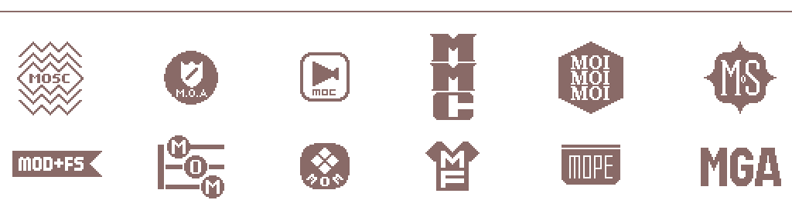

... default text ...
Glory to Arstotzka.
APPROVED FOR RELEASE BY THE MINISTRY OF MEDIA
APPROVED FOR RELEASE BY THE MINISTRY OF COMMUNICATION
APPROVED FOR RELEASE BY THE MINISTRY OF MEDIA & COMMUNICATION
APPROVED FOR RELEASE BY THE MINISTRY OF ADMISSION
APPROVED FOR RELEASE BY THE MINISTRY OF SCHEDULED CELEBRATION
APPROVED FOR RELEASE BY THE MINISTRY OF DISCOUNTS & FLASH SALES
APPROVED FOR RELEASE BY THE MINISTRY OF FABRIC
APPROVED FOR RELEASE BY THE MINISTRY OF MELODY
APPROVED FOR RELEASE BY THE MINISTRY OF POCKET ELECTRONICS
APPROVED FOR RELEASE BY THE MINISTRY OF GRATITUDE ASSIGNMENT
APPROVED FOR RELEASE WITH EDITS BY THE MINISTRY OF SECURITY
APPROVED FOR RELEASE WITH EDITS BY THE MINISTRY OF INFORMATION
